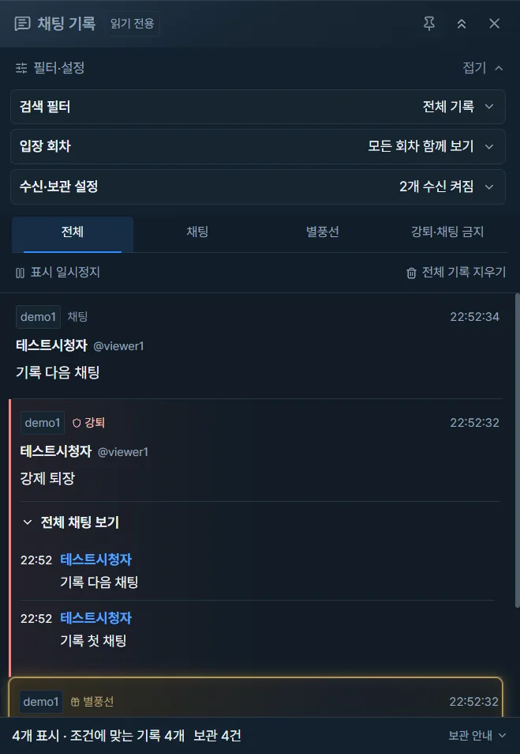
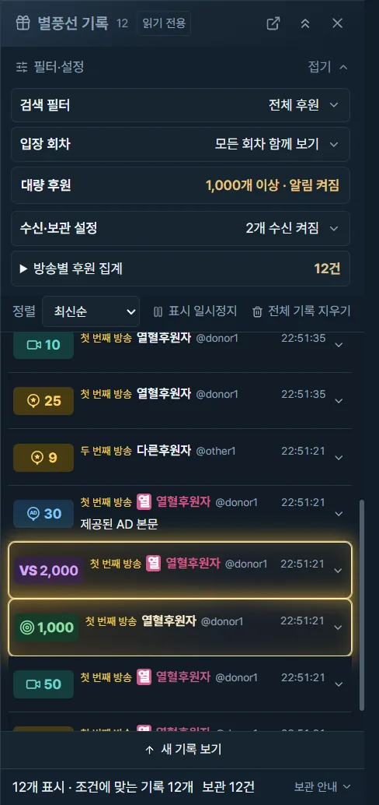
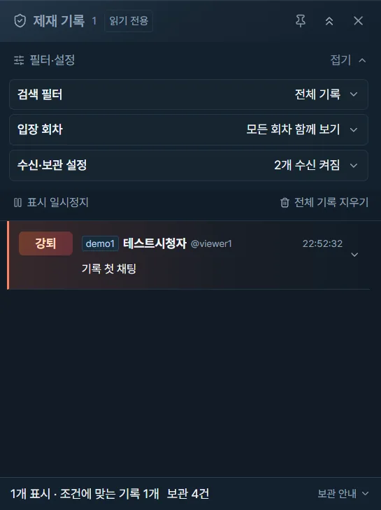
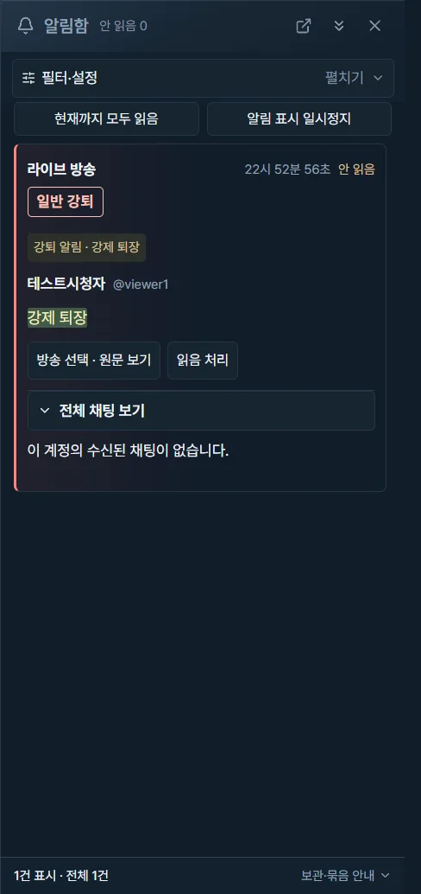

보고 싶은 구성으로 바꾸세요
단일 보기·분할·스포트라이트·양쪽 메인. 방송 사이, 영상과 채팅 사이의 경계를 조절해 나에게 맞는 비율을 만드세요.
1~3개는 채팅 아래 고정 · 5~9개는 영상에 집중
2.0.1 Windows x64
영상과 채팅, 놓치고 싶지 않은 순간까지.
최대 9개 SOOP 방송을 원하는 비율로 보고,
필요한 기록과 알림을 함께 모아보세요.


최대 9개 방송한 공간에서 함께
자유로운 화면 비율경계를 끌어 조절
따로 띄우는 기록창시청과 기록을 동시에
나에게 맞는 시청
단일 보기·분할·스포트라이트·양쪽 메인. 방송 사이, 영상과 채팅 사이의 경계를 조절해 나에게 맞는 비율을 만드세요.
번호 카드와 키보드로 방송을 선택하고, 카드를 끌어 순서를 바꾸세요. 영상 위 휠로 볼륨을 5%씩 조절하고 더블클릭으로 전체화면에 들어갑니다.
LIVE와 즐겨찾기에서 썸네일을 미리 보고 바로 입장하세요. 즐겨찾기를 열면 상태를 갱신하고, 고정 방송이 시작되면 알림을 받을 수 있습니다.
키워드·제재·대량 후원·고정 방송 시작 알림을 각각 켜고 끄세요. 앱 알림함으로 모아보거나 설치형에서 Windows 알림을 함께 사용하세요.
시청 옆에 두는 기록
영상은 계속 보면서 채팅·별풍선·제재·알림을 별도 창에 띄워두세요. 필터를 한 번에 접으면 더 많은 내용을 확인할 수 있습니다.
지정 키워드·계정·매니저의 채팅은 선택해 보관하고, 전체 임시 채팅에서는 검색과 제재 대상의 대화를 확인하세요. 재입장 기록은 회차를 구분해 함께 조회합니다.


실제 앱 화면 · 예시 데이터
Glass 헤더와 메뉴, 자연스러운 카드 삽입 정렬과 배치 전환. 번호 카드에는 축약한 시청자 수를 표시합니다.
채팅·알림·제재·별풍선 창을 따로 띄우고 위에 고정하세요. 필터 전체 접기로 조회 공간을 넓혔습니다.
메뉴를 열 때 병렬로 갱신하고, 고정 방송의 OFF→LIVE 전환을 앱·Windows 알림으로 알려줍니다.
메뉴 화면을 재사용하고 필요한 상태만 전달합니다. 긴 별풍선 목록의 반복 그리기 비용도 줄였습니다.
나만의 시청 공간, 지금 시작하세요
Windows 10/11 x64 · 무료
코드 서명되지 않은 배포본입니다. Windows 게시자 확인 안내가 나타날 수 있습니다.
SHA-256 체크섬기존 앱을 종료하고 새 설치형을 실행하세요. 기존 즐겨찾기·배치·필터·알림 설정을 이어갑니다. 설치 식별자와 %APPDATA%\SOOP Multiview 경로는 유지하며 설치형·포터블은 기본 설정을 공유합니다. 자동 업데이트는 제공하지 않습니다.
전체 임시 기록은 10GiB 한도이며 입장 회차별 전체 채팅 1GiB, 선택 기록 64MiB 한도를 함께 적용합니다. 방송을 닫아도 앱 종료까지 남기고, 재입장은 별도 회차로 저장합니다. 기본 조회는 모든 회차를 함께 보여주며 후원 누적과 제재 대화는 해당 회차를 기준으로 합니다. 명시적 기록 지우기·로그아웃·앱 종료 시 삭제하고 강제 종료 잔여 파일은 다음 시작 때 정리합니다. 한도 도달 시 기존 기록을 유지하고 새 보관을 중단합니다. SQLite 작업 저널은 일시적으로 추가 공간을 사용할 수 있습니다.
독립 프로필 3개에 최대 4개씩, 앱 전체 9개 방송을 지원합니다. 기존 로그인·즐겨찾기는 프로필 1에 유지되며 추가 프로필은 필요할 때 각각 로그인합니다. 스트리머 조회는 부분 대조이며 참고 즐겨찾기 수는 실시간 수치가 아닙니다. 광고 차단은 현재 확인된 요청·배너에 적용되고 영상 자체의 광고는 제거하지 않습니다. 공식 로그인·시청 제한을 따릅니다.
Windows 알림은 설치형에서 선택적으로 켤 수 있으며 포터블은 앱 알림함을 사용합니다. 계정 즐겨찾기는 사용자 실사용 확인을 완료했습니다. 실제 계정으로 앱 9개 동시 시청과 Windows 알림 표면 클릭은 미검증입니다. 공개 방송 관측과 자동 검사 결과는 릴리스 노트에 구분해 제공합니다.